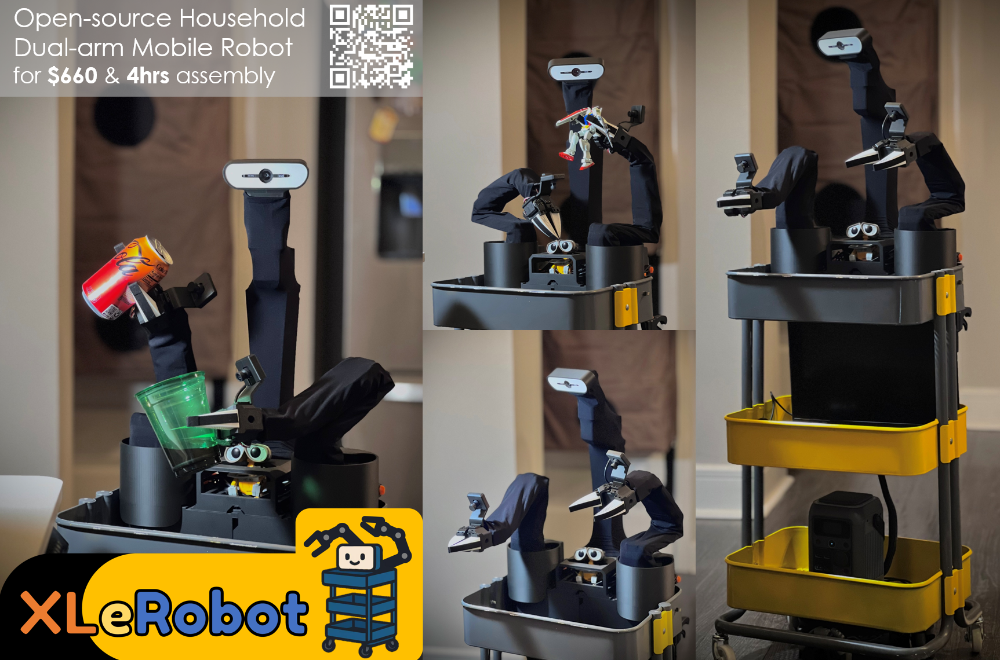
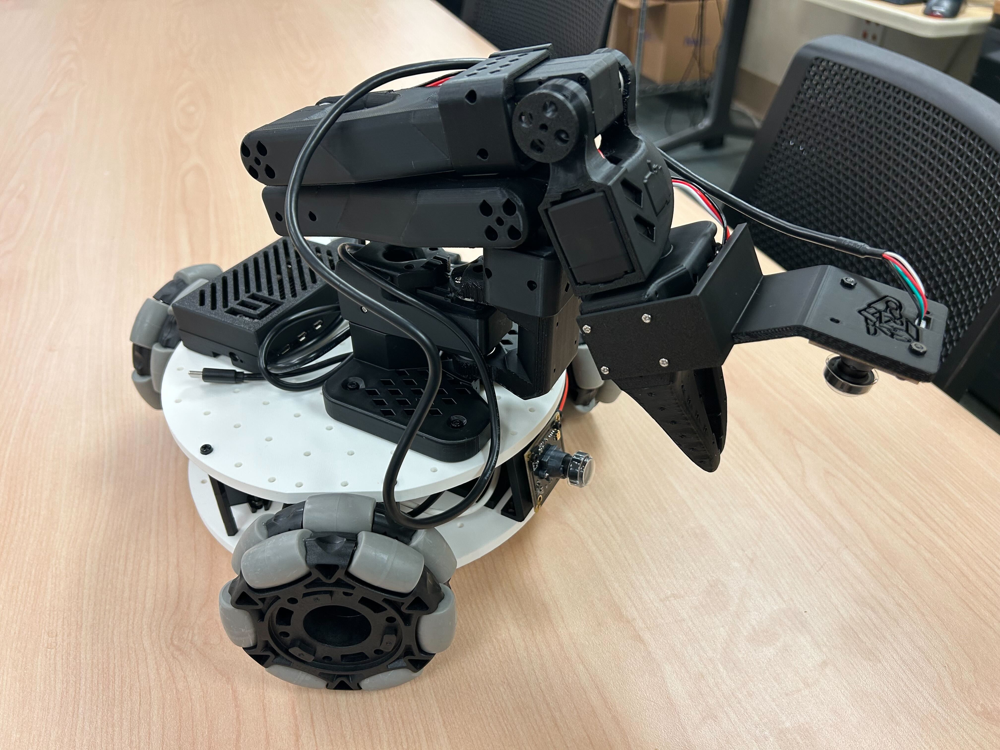

Eleven days. One robot. One window.
Your spec asks for a farm that thinks, operates and builds, and for a V0 that is "a testable system, not a miniature dream." This is that V0 for the Sep 30 – Oct 10 stay: XLeRobot, 24 printed pods on a table in daylight, one fast crop in repeated batches, and a botanist agent that proposes and measures recipe changes. Physical work starts Sep 30.

One system, three capabilities — as things on a cart.
Sense, reason, decide
Runs on: the MacBook riding on the cart. Made of: a botanist agent that designs each wave's recipes and keeps a lab notebook · AprilTag localisation · leaf-area measurement from photos · a rule-based scheduler · a small database · a message to your phone when it is unsure.
the intelligence layerRun the living system
Runs on: XLeRobot — left arm senses, right arm handles. Serves: two 12-pod tiles on a table by a window, a weigh dock on the cart, a clean-pod stack and a harvest bin. Inspection, watering by weight, harvesting-by-swap, sanitation-by-swap, replacement, calibration.
the farm layerBuild, repair, replicate
This trip: printing starts on Sep 30; shop pots keep the first batch independent of printing. Day 10 targets an empty-tray installation demo after the handling checks pass. Later: the cart picks released prints from a fixture and assembles pods; you assemble the furniture. Motors, chips and probes stay bought — your stated boundary.
the replication layerGoal A in these eleven days; goal B gets a first demo.
Indefinitely self-maintaining
The cart parks at the table and runs a round at 10:00 and 14:00. It notices trouble (a dry pod, mould, a missing pod, a drifting scale), deals with it (top up, swap, recalibrate) or calls you. Your definition, honoured: from day 1 we log how long it runs between your interventions and what share of jobs it does alone.
D1 – D10 · reduced intervention only after checks passSelf-expanding & replicating
Day 10 targets a supported slide of an empty printed tray from the cart to the table: the smallest possible "install a new module". You assemble any later shelving. Robot assembly of pods and direct printer pickup are later experiments. Why a robot on wheels: it can travel between the table and a future printer station.
D10 demo · the rest laterOne table; printed pods and trays
Every component has a letter and a shape. Diagonal stripes mean printed plastic. The scale plate prints; its sensor and electronics do not. The Bambu A1 is the working assumption, still to be confirmed on Sep 30.
Plumbing: what prints, what doesn't, and how it comes back.
Why it was cut
Microgreens in plain water need no dosing; shared water is how one mouldy pod becomes twelve; and a slow leak over four unattended days sits beside a laptop and a battery. That was caution about the schedule, not about printing.
What prints
In PETG: funnels, gutters, manifold bodies, connector housings, nozzles, tube clips, brackets. Separate components: pumps, tubing, wicks, O-rings and reliable valves. Printed threads and press-fits weep under pressure, so design for gravity or for seals.
The order to try them
A from D6: printed funnel / gutter with real wicks, forgiving of a loose arm; shares water only within one tile. B when you have one pump. C printed D8–D9 and tested in the D10 tile-install demo: the first real answer to your connector question.
Still true
No electronics in pods, sensors stay on the arm, and at least one tile stays isolated and hand-or-robot watered as the control, so a leak or an infection in the plumbed tile never ends the experiment.
The window is the grow light.
Why it works
Microgreens live mostly off the seed. They spend days 1–2 covered in the dark anyway, then need only a few hours of bright indirect light to green up. Eleven-plus hours of October daylight is plenty.
What it costs us
Light changes with cloud, and this is a wet season. So every photo includes a reference card, rounds run at fixed times, and the agent compares pods within the same photo, never across days. Expect leggier shoots on grey days.
Keep them indoors
October days are about 19 °C but nights fall toward 10 °C, and it is typhoon season. A room at 18–22 °C by a south or east window is ideal; a sheer curtain stops midday glare from blinding the cameras.
Sensor parts and costs
Basic kit: $99.40 · Basic + pH / conductivity: $271.75 · Optional upgrades below are extra.
BASIC · buy once
Breadboards + jumper wires · $9.99 · M2–M5 bolts / nuts / washers · $9.99
BASIC
BASIC
BASIC + optional
ALREADY INCLUDED
Paper size-reference tags; reuse your Mac and powered hub.
BASIC
OPTIONAL chemistry
WITH chemistry
OPTIONAL
DEFER this trip
Amazon US · Sep 20, 2026 · before tax / shipping · one pack per link. Totals exclude robot, printer, filament and tools. Wiring / firmware required. Obtain probe liquids locally in Japan; DO electrolyte is corrosive and not included in the kit. Full checklist and integration notes ↗
One crop makes the experiment easier to interpret
Start with garden cress, one seed batch. Multiple species would test whether the robot can handle different plants, but they also introduce different growth rates and water needs. That comparison can wait.
12 shop pots
12 printed pods, or shop pots
Reuse emptied slots
Within each 12-pod batch: 6 controls + 6 with one change, initially seed density. Keep water, container type and light positions comparable within the batch. Compare recipes within A and within B; changing the pot makes A-versus-B yield an unfair comparison.
Cress is a candidate, not a deadline guarantee: RHS gives 7–14 days. If unavailable, use one locally available sprouting crop throughout. Repeated batches test reliability across plant ages; this is not three completed generations in eleven days.
The part that improves itself: an autonomous botany agent.
What it is
Your spec's thinking layer: "diagnosis, experiments … learning across crop cycles." An application on the MacBook calling a language model, with four tools: read the log, propose a wave, schedule robot tasks, call you.
What it experiments on
Each batch compares 6 controls with 6 test pods. Change seed density first; keep other settings fixed. Log individual pods and window positions. Water-interface trials use a separate bench setup.
What can improve this trip
A establishes the baseline; B checks an early hypothesis using growth observations, not a completed harvest. After A is harvested, C can test a new recipe beyond this stay. Pod redesign is a separate experiment.
Guard rails
It only picks from a fixed menu of safe actions; scripts, not the model, move the arms; you approve every proposal until day 7; every decision and its reasoning lands in a notebook you can read.
Instrument → supervise → maintain in eleven days; the rest on later trips.
Sep 19–29 · software and digital design only
Sep 30 is the first physical day: assembly, wiring, calibration, paper tags, first print and first sowing all start in Kesennuma.
This is a proposed software work plan, not software already implemented. Printer assumption: Bambu A1; filament is being arranged by you. Final slices depend on the actual nozzle, plate and material.
D1 – D5 · build it, teach it, start the rounds.
Sep 30
Oct 1
Oct 2
Oct 3
Oct 4
D6 – D11 · hand it over, then read the results.
Oct 5
Oct 6
Oct 7
Oct 8
Oct 9
Oct 10
What has to exist, by which day, and who writes it.
No imitation learning on this trip: on this arm it buys 60–90 % success for hundreds of demonstrations and does not generalise. Tag-referenced scripts are both faster to write and more reliable. The 8 GB MacBook runs all of the above; it would not run training.
Nine research areas, each with a first experiment on this rig.
Co-design the farm, the reasoner and the robot as one machine.
The interface is the product
Everything the robot touches is a rigid plastic part with a ± 5 mm target: a pod lip, a cone base, a tile guide. This cheap arm is loose by about a degree, and it never has to be better than that. FarmBot, Jubilee, Opentrons and every 95 %-success transplanter teach the same lesson.
Three kinds of clue
Machine: motor temperature and strain, docking retries. Sensor: scale disagreeing with itself, tags going missing. Plant: growth slowing, colour shifting, weight not dropping. Every fault you cause on purpose is labelled; the agent learns from your farm's own failure log.
Repair = replace, then prove
A deliberately small vocabulary: swap a pod, swap a tile, top up, recalibrate, re-seat. Each ends with a check — re-weigh, re-photograph, re-read the tag — before the log entry closes. The farm is designed so those five verbs are enough.
Four questions. Fourteen numbers behind them.
1 · How much did you have to help?
- Hands-on time per harvest — tap start/stop whenever you touch the farm; we add it up.
- Longest stretch without you — hours between two interventions.
- Share of jobs done alone — of every photo, weigh, top-up and swap, the % with no human.
2 · Did it notice and fix problems?
- Caught it? — we break things on purpose and count how often it notices and names the right cause.
- Fixed it alone? — % of problems solved without calling you.
- Robot reliability — successful grasps and parks out of attempts; pods knocked over.
- Wearing out? — do those success rates fall as the hours add up.
3 · Did the plants do well, and at what cost?
- Survival, yield, speed — pods sown vs harvested; grams per pod; days to harvest.
- Losses — pods lost to mould or drying out.
- Inputs per gram — water (by weight) and electricity (battery %) per gram harvested.
4 · Can it grow itself?
- Time to add a module — minutes from "new tile" to "growing" (first target on D10).
- Made on site — share of parts that were printed, by count, weight and cost (count farm prints made in Kesennuma separately from kit parts).
- Built by the robot — share of assembly steps it did itself.
- Still shipped in — weight, cost and number of bought parts.
Your slide's principle, unchanged: measure autonomy by what stops requiring people. Every number above is a count from the robot's log — nothing is estimated.
Your twelve questions, sorted by when we will know.
Smallest useful setup?
One cart, one table, 24 pods.
Rail, gantry or mobile robot?
Mobile: it must later reach a printer and a second table.
How is cleaning done?
Swap, don't scrub: used pod out, fresh pod in.
Disposable, replaceable or repairable?
Pods are disposable; tiles, probe and motors are replaceable; the cart is repairable.
What can be made on site?
Farm pods, tray halves and guides are printable; cart baskets, shelf decks and electronics are supplied parts.
What breaks most often?
The failure log will rank it.
Which jobs stay hard for the robot?
Failures counted per task: park, grasp, weigh, top up, swap.
Plant, sensor or machine problem — can it tell?
We break things on purpose and score its guesses.
When should it call you?
Starting rule: the same check fails twice, or any reading leaves its limits. We tune it on D5–D6.
How do water and power plug in?
A water connector is a separate bench experiment this trip. Reliable automatic fluid and power connections remain later work.
Is a simulator worth it?
Only for checking drive paths and reach. Plants are grown for real.
How does a new module prove it is safe?
A self-check plus a quarantine day before it joins the others.
The first operational envelope, defined.
Crop family + method: one crop, initially garden cress, on moist kitchen paper; water depth follows the tested container design: shop pots for A; printed pods for B if ready, with matching controls in each batch. No nutrients. Water parts arrive as printed experiments from D6.
Dimensions, utilities, interfaces: one table (~72 cm) by a window; two 12-pod trays, each joined from two printed halves targeting ≤ 150 × 200 mm per half; daylight; one wall socket. Paper AprilTags on floor, table, tiles and lids.
Robot class + workspace: XLeRobot — two SO-101 arms, reach 0.5–1.25 m high and 0.36 m past the cart edge, 0.6–1 kg per arm, two-wheel drive, 10–12 h per charge, a MacBook as the brain.
Autonomous duration + cycles: eleven days to assemble and test; Oct 6–9 is a conditional autonomy target with charging and interventions logged. A is the primary harvest attempt; B may finish later.
Permitted human intervention: refill, charge, cut harvests, replenish pots and answer alerts. Log every intervention; classify scheduled maintenance separately from failures.
"A testable system, not a miniature dream." It exposes real maintenance failures (dry pods, mould, missed grasps, lost tags, hot motors), supports repeatable experiments (one crop, controls and injected faults) and produces the data the next stage needs: a failure log and a ranked recipe book.
XLeRobot, in one slide.



Images: TheRobotStudio, SIGRobotics-UIUC, Vector-Wangel and AprilRobotics. Sources and licenses.
Left arm senses, right arm handles.
All sensing travels with the robot. If you add the pH / conductivity probe, it rides the left wrist in a soft holder, is rinsed between pods and rests in storage solution on the cart.
Eight steps, scripted, twice a day.
Finding its way
Paper AprilTags on the floor and the table edge. It approaches slowly, stops within 2 cm, retries up to three times, then calls you.
Why scripted
Teaching this arm by demonstration takes hundreds of examples for 60–90 % success and fails on anything new. A tag-referenced script is quicker to write and more reliable.
Protection
A watchdog checks every motor's temperature and strain ten times a second. Work is seconds long, rests are minutes long.
What rides where.
What “tray” and “shelf” mean in this plan
A1 print plan: 256 × 256 mm bed. The old 260 × 190 mm tray is too long for a flat, axis-aligned print. Each proposed half fits inside 150 × 200 mm; validate joints, brim and clearances in the slicer.
CAD dimensions are design targets, not tested files. A loaded 12-pod tray is not an arm payload: at 200 g per pod, plants alone weigh 2.4 kg. Use supported sliding and carry pods individually. Sources: A1 specifications · XLeRobot payload limits.
Risks and fallbacks
The pod design does not exist yet
CAD can be drafted before Sep 30; first fit and leak checks happen on D1 in Kesennuma. Print one cup before batching. Shop pots cover A and remain the fallback for B.
Print time is still unmeasured
Queue: one pod test → cups → scale plate → tray halves → water parts. Replace the unsupported 75-hour estimate with actual slices. Reduce to 12 pots if needed.
The robot is late or a part is missing
Day 1 is an inventory against the contents sheet. Wave A is sown by hand and logged by phone camera regardless, so the plants never wait for the robot.
Grey, wet weather
Colour card in every photo; compare pods within a photo, not across days. A clip lamp is the backup for night rounds, not for growth.
Driving and parking is unreliable
Fallback: leave the cart parked at tile 1 for the whole stay. Twelve pods, no driving, every other experiment intact.
An 8 GB laptop and hot motors
Software is checked with mocks before Sep 30; hardware compatibility and timing are first tested on site. The watchdog goes in on D2, before any unattended minute.
A farm that keeps going, on a cart that can build the next one.
Eleven days: one crop, two measured batches, a first harvest attempt, and a logged autonomy trial.
Can the robot take a print directly from the A1?
Potentially, after it has released from the plate. Picking up a loose cup is a reasonable first experiment. Peeling an attached print off the bed is a different task, and is not a demonstrated capability of this farm.
This trip: human release → robot pickup is the fallback; direct bed pickup is optional after the farm works. The printer sits on a dry bench with clearance for its moving bed. Do not rely on automatic ejection or use the arm to pry a stuck print.
Bambu recommends letting the textured PEI plate cool before removal. The integration above is our proposed experiment; no stock A1 auto-eject feature is assumed. Sources: Bambu plate guidance · A1 specifications · XLeRobot limits.